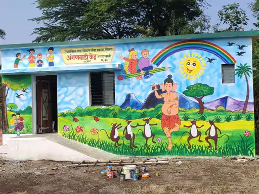
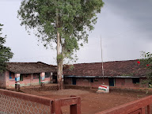

Village Temples
Shree Jagadamba Mata Mandir
Vani GaonThis temple is located in the main market area of Vani village. According to the Devi Bhagavata, this temple in Vani village is considered the original seat (or 'sister shrine') of Goddess Saptashrungi. Local belief holds that a pilgrimage to Saptashrungi Garh remains incomplete unless one visits the Jagadamba Mata temple in Vani to offer prayers.
Village Anganwadi & Child Care Center
Shree Jagadamba Anganwadi Center
Nurturing the future of Vani village by providing critical early childhood care, nutrition, healthcare, and growth monitoring. Operated by dedicated community sevikas, our center offers a safe, joyful environment for play-based early learning and maternal support.

Zilla Parishad Primary School

Z.P. Prathmik Shala - Vani
Empowering the young minds of Vani with quality primary education, digital learning classrooms, and co-curricular programs. Equipped with free textbook distribution, mid-day meals, sports training, and dedicated teachers fostering all-round student development.
Shree Jagadamba Vidyalaya & Kanishtha Mahavidyalaya
Vani Secondary & Higher Secondary Vidyalaya
A premier rural educational hub imparting secondary (8th–10th) and higher secondary junior college education (11th & 12th Arts, Commerce, and Science streams). Fully equipped with dedicated science laboratories, a digital library, computer facilities, NCC, and sports coaching for board exam preparation and competitive guidance.
Cultural Heritage & Festivals of Vani
Experience the spiritual energy, folk traditions, and grand celebrations that bring the whole community together throughout the year.
Saptashrungi Mata Chaitra Yatra & Navratri
The biggest spiritual gathering in the region. Lakhs of devotees pass through Vani Gaon to take blessings at Shree Jagadamba Mata before heading up the holy steps of Saptashrungi Garh. The village is filled with devotional bhajans, grand purnima fairs, and non-stop anna-daan.
Bail Pola & Krishi Utsav
A tribute to the farming culture of Vani. Farmers decorate their bullocks with colourful cloth, jhul, bells, and vermilion, followed by an evening village procession through the market.
- Traditional Toran Bandhan
- Village-wide bullock parade
Chhatrapati Shivaji Maharaj Jayanti
Celebrated with intense passion across all talukas and alleys. A grand morning bike rally, traditional lezim performances by local youth, and saffron flags honoring Maratha history.
- Grand Shiv Jyot Yatra
- Lezim & Mardani Khel displays
Vani Sarvajanik Ganeshotsav
10 days of community togetherness, decorative social tableaus (dekhawe), blood donation drives, street dramas, and an unforgettable Visarjan Mirwanuk.
- Cultural Rangoli Competitions
- Dahi Handi Human Pyramids